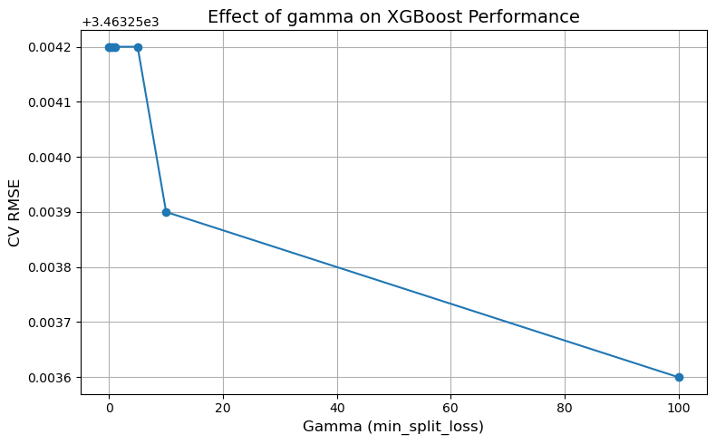
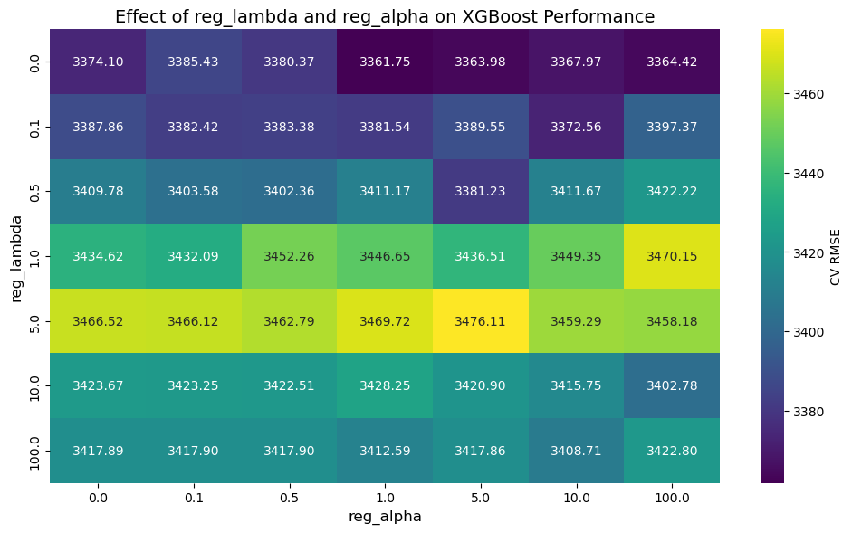
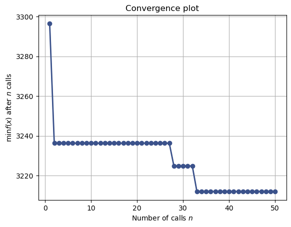
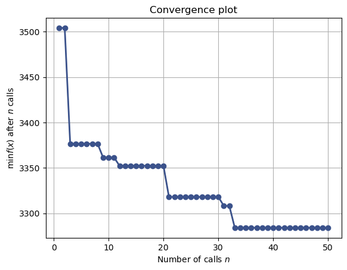
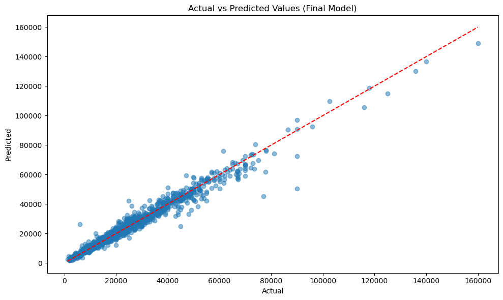
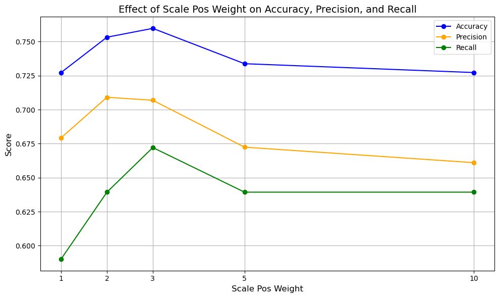
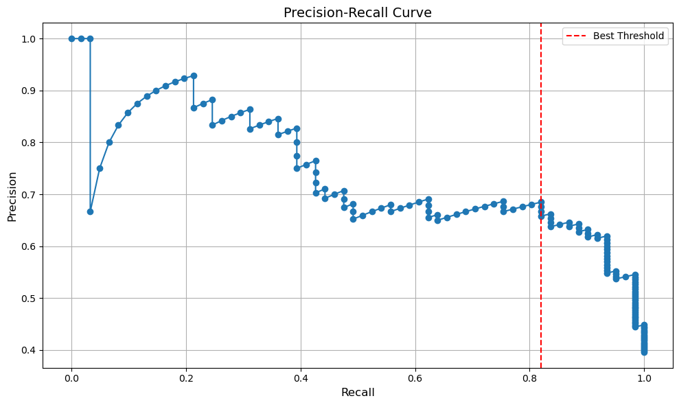

import pandas as pd
import numpy as np
import matplotlib.pyplot as plt
from sklearn.model_selection import train_test_split, GridSearchCV
from sklearn.preprocessing import OneHotEncoder, StandardScaler
from sklearn.compose import ColumnTransformer
from sklearn.pipeline import Pipeline
from sklearn.metrics import root_mean_squared_error, r2_score, accuracy_score, precision_score, recall_score, f1_score, precision_recall_curve
from xgboost import XGBRegressor, XGBClassifier
import seaborn as sns
from skopt import BayesSearchCV
from skopt.space import Real, Categorical, Integer
from skopt.plots import plot_objective, plot_histogram, plot_convergence
import warnings
from IPython import display10 XGBoost
10.1 What is XGBoost?
XGBoost (Extreme Gradient Boosting) is a scalable and efficient implementation of gradient boosting developed by Tianqi Chen and Carlos Guestrin in 2016. It has become one of the most popular machine learning algorithms for structured/tabular data, widely used in Kaggle competitions and production environments.
Compared to vanilla Gradient Boosting, XGBoost includes additional system-level and algorithmic optimizations such as:
- Regularization (to reduce overfitting)
- Tree pruning
- Parallelized tree construction
- Missing value handling
- Out-of-core computation for large datasets
10.2 XGBoost Intuition
XGBoost extends vanilla gradient boosting with:
- Regularization: Penalizes complex models via L1/L2 terms in the loss function.
- Second-order optimization: Uses both gradients and hessians for faster convergence and more accurate splits.
- Split constraints: Prevents splits with insufficient gain (via
gamma) during tree growth, avoiding the need for post-pruning.
10.3 How XGBoost Works (Regression Example)
XGBoost minimizes the following regularized objective at each boosting round \(t\):
\[ \mathcal{L}^{(t)} = \sum_{i=1}^n l(y_i, \hat{y}_i^{(t-1)} + f_t(x_i)) + \Omega(f_t) \]
Where: - \(l\) is a differentiable convex loss function (e.g., squared error) - \(f_t\) is the prediction function at iteration \(t\) (a tree) - \(\Omega(f_t) = \gamma T + \frac{1}{2} \lambda \sum w_j^2\) is the regularization term (penalizes the number of leaves \(T\) and leaf weights \(w_j\))
To simplify optimization, XGBoost applies a second-order Taylor approximation of the loss function:
\[ \mathcal{L}^{(t)} \approx \sum_{i=1}^n \left[ g_i f_t(x_i) + \frac{1}{2} h_i f_t(x_i)^2 \right] + \Omega(f_t) \]
Where: - \(g_i = \frac{\partial l(y_i, \hat{y}_i)}{\partial \hat{y}_i}\) is the first-order derivative (gradient) - \(h_i = \frac{\partial^2 l(y_i, \hat{y}_i)}{\partial \hat{y}_i^2}\) is the second-order derivative (hessian)
XGBoost then chooses the tree structure and leaf values that minimize this approximate objective.
10.4 Using XGBoost
Although XGBoost is not part of Scikit-learn, it provides a Scikit-learn-compatible API through the xgboost.sklearn module. This allows you to use XGBoost models seamlessly with Scikit-learn tools such as Pipeline, GridSearchCV, and cross_val_score.
The main classes are:
XGBRegressor: for regression tasks
XGBClassifier: for classification tasks
To install the package:
pip install xgboostNote: XGBoost is a separate library, not part of Scikit-learn, but it provides a Scikit-learn-compatible API via
XGBClassifierandXGBRegressor.
This makes it easy to integrate XGBoost models into Scikit-learn workflows such asPipeline,GridSearchCV, andcross_val_score.
10.5 Core Hyperparameter Categories
10.5.1 Model Complexity
n_estimators: Number of boosting rounds
max_depth: Maximum depth of a tree
min_child_weight: Minimum sum of instance weight needed in a child
10.5.2 Learning and Regularization
learning_rate(eta): Shrinkage rate to scale each tree’s contribution
subsample: Fraction of rows used per boosting round
colsample_bytree: Fraction of features used per tree
colsample_bylevel,colsample_bynode: Further control over feature subsampling
10.5.3 Regularization
gamma: Minimum loss reduction required to make a further partition
reg_alpha: L1 regularization term on weights (Lasso)
reg_lambda: L2 regularization term on weights (Ridge)
10.5.4 Optimization Control
objective: Loss function (e.g.,'reg:squarederror','binary:logistic')
tree_method: Tree construction algorithm ('auto','hist','gpu_hist')
early_stopping_rounds: Stop if validation score doesn’t improve after N rounds
However, there are other hyperparameters that can be tuned as well. Check out the list of all hyperparameters in the XGBoost documentation.
# Load the dataset
car = pd.read_csv('Datasets/car.csv')
car.head()| brand | model | year | transmission | mileage | fuelType | tax | mpg | engineSize | price | |
|---|---|---|---|---|---|---|---|---|---|---|
| 0 | vw | Beetle | 2014 | Manual | 55457 | Diesel | 30 | 65.3266 | 1.6 | 7490 |
| 1 | vauxhall | GTC | 2017 | Manual | 15630 | Petrol | 145 | 47.2049 | 1.4 | 10998 |
| 2 | merc | G Class | 2012 | Automatic | 43000 | Diesel | 570 | 25.1172 | 3.0 | 44990 |
| 3 | audi | RS5 | 2019 | Automatic | 10 | Petrol | 145 | 30.5593 | 2.9 | 51990 |
| 4 | merc | X-CLASS | 2018 | Automatic | 14000 | Diesel | 240 | 35.7168 | 2.3 | 28990 |
X = car.drop(columns=['price'])
y = car['price']
# Identify categorical and numerical columns
categorical_cols = X.select_dtypes(include=['object']).columns.tolist()
numerical_cols = X.select_dtypes(exclude=['object']).columns.tolist()
X_train, X_test, y_train, y_test = train_test_split(X, y, test_size=0.2, random_state=42)Let’s define some helper functions before building any models.
# Create preprocessing for numerical and categorical features
preprocessor = ColumnTransformer(
transformers=[
('num', 'passthrough', numerical_cols),
('cat', OneHotEncoder(handle_unknown='ignore'), categorical_cols)
]
)
# Function to evaluate model
def evaluate_model(model, X_test, y_test):
y_pred = model.predict(X_test)
rmse = root_mean_squared_error(y_test, y_pred)
r2 = r2_score(y_test, y_pred)
print(f"Root Mean Squared Error: {rmse:.2f}")
print(f"R² Score: {r2:.4f}")
return rmse, r2
# Function to plot feature importance
def plot_feature_importance(model, preprocessor, X):
if hasattr(model, 'feature_importances_'):
# Get feature names after one-hot encoding
cat_features = preprocessor.named_transformers_['cat'].get_feature_names_out(categorical_cols)
all_features = np.append(numerical_cols, cat_features)
# Get feature importances
importances = model.feature_importances_
# Sort feature importances in descending order
indices = np.argsort(importances)[::-1]
# Create a DataFrame for easier visualization
importance_df = pd.DataFrame({
'Feature': all_features[indices][:20], # Top 20 features
'Importance': importances[indices][:20]
})
importance_df = importance_df.sort_values(by='Importance', ascending=False)
return importance_df10.5.5 Baseline Model
# ===== 1. Baseline Model =====
print("\n===== Baseline XGBoost Model =====")
baseline_pipeline = Pipeline([
('preprocessor', preprocessor),
('regressor', XGBRegressor(random_state=42))
])
baseline_pipeline.fit(X_train, y_train)
print("\nBaseline Model Evaluation:")
baseline_metrics = evaluate_model(baseline_pipeline, X_test, y_test)
# Plot feature importance for baseline model
baseline_importance = plot_feature_importance(baseline_pipeline.named_steps['regressor'],
baseline_pipeline.named_steps['preprocessor'],
X)
===== Baseline XGBoost Model =====
Baseline Model Evaluation:
Root Mean Squared Error: 3354.16
R² Score: 0.961710.5.6 Early Stopping in XGBoost
Early stopping is a technique that stops training when the model’s performance on a validation set stops improving, helping to prevent overfitting and reduce training time.
10.5.6.1 How It Works
At each boosting round, XGBoost tracks a performance metric (e.g., RMSE or log loss) on a validation set. If the metric doesn’t improve for a specified number of rounds (early_stopping_rounds), training is halted.
- Saves computation by avoiding unnecessary boosting rounds.
- Returns the model from the best iteration (with the lowest validation error).
10.5.6.2 Requirements
- You must provide an
eval_setcontaining a validation set. - The evaluation metric must be one that XGBoost can track (
eval_metricis optional but recommended).
# ===== 2. Early Stopping =====
print("\n===== XGBoost with Early Stopping =====")
# Create validation set for early stopping
X_train_es, X_val, y_train_es, y_val = train_test_split(X_train, y_train, test_size=0.1, random_state=42)
# Preprocess the validation set
preprocessor_fit = preprocessor.fit(X_train_es)
X_train_es_transformed = preprocessor_fit.transform(X_train_es)
X_val_transformed = preprocessor_fit.transform(X_val)
# Train with early stopping
early_stop_model = XGBRegressor(
random_state=42,
n_estimators=1000,
early_stopping_rounds=20
)
early_stop_model.fit(
X_train_es_transformed, y_train_es,
eval_set=[(X_val_transformed, y_val)],
verbose=False
)
===== XGBoost with Early Stopping =====XGBRegressor(base_score=None, booster=None, callbacks=None,
colsample_bylevel=None, colsample_bynode=None,
colsample_bytree=None, device=None, early_stopping_rounds=20,
enable_categorical=False, eval_metric=None, feature_types=None,
feature_weights=None, gamma=None, grow_policy=None,
importance_type=None, interaction_constraints=None,
learning_rate=None, max_bin=None, max_cat_threshold=None,
max_cat_to_onehot=None, max_delta_step=None, max_depth=None,
max_leaves=None, min_child_weight=None, missing=nan,
monotone_constraints=None, multi_strategy=None, n_estimators=1000,
n_jobs=None, num_parallel_tree=None, ...)In a Jupyter environment, please rerun this cell to show the HTML representation or trust the notebook. On GitHub, the HTML representation is unable to render, please try loading this page with nbviewer.org.
XGBRegressor(base_score=None, booster=None, callbacks=None,
colsample_bylevel=None, colsample_bynode=None,
colsample_bytree=None, device=None, early_stopping_rounds=20,
enable_categorical=False, eval_metric=None, feature_types=None,
feature_weights=None, gamma=None, grow_policy=None,
importance_type=None, interaction_constraints=None,
learning_rate=None, max_bin=None, max_cat_threshold=None,
max_cat_to_onehot=None, max_delta_step=None, max_depth=None,
max_leaves=None, min_child_weight=None, missing=nan,
monotone_constraints=None, multi_strategy=None, n_estimators=1000,
n_jobs=None, num_parallel_tree=None, ...)# Update the pipeline with the best model
early_stop_pipeline = Pipeline([
('preprocessor', preprocessor),
('regressor', XGBRegressor(
random_state=42,
n_estimators=early_stop_model.best_iteration, # Use the best number of iterations
))
])
early_stop_pipeline.fit(X_train, y_train)
print("\nEarly Stopping Model Evaluation:")
early_stop_metrics = evaluate_model(early_stop_pipeline, X_test, y_test)
print(f"Best number of iterations: {early_stop_model.best_iteration}")
Early Stopping Model Evaluation:
Root Mean Squared Error: 3332.03
R² Score: 0.9622
Best number of iterations: 19310.5.7 gamma in XGBoost
Definition:
gamma (also called min_split_loss) specifies the minimum loss reduction required to make a further partition (split) on a leaf node of the tree.
How it works:
- During tree construction, XGBoost evaluates whether splitting a node reduces the overall training loss.
- If the reduction in loss is less than
gamma, the split is discarded, and the node becomes a leaf. - Higher values of
gammamake the algorithm more conservative, leading to simpler trees.
Formula:
At each split, XGBoost calculates the gain (reduction in regularized loss):
\[ \text{Gain} = \frac{1}{2} \left( \frac{G_L^2}{H_L + \lambda} + \frac{G_R^2}{H_R + \lambda} - \frac{(G_L + G_R)^2}{H_L + H_R + \lambda} \right) - \gamma \]
Where: - \(G_L\), \(H_L\): gradient and hessian sums for the left child - \(G_R\), \(H_R\): gradient and hessian sums for the right child - \(\lambda\): L2 regularization term - \(\gamma\): minimum loss reduction required to make a split
Effect of gamma:
gamma Value |
Behavior | Risk |
|---|---|---|
| 0 (default) | Most splits are allowed | Overfitting possible |
| Moderate | Small-gain splits are blocked | More robust trees |
| High | Very few splits allowed | Underfitting possible |
Use case: - Tune gamma to prune noisy or unnecessary splits. - Helpful when the model is overfitting, especially on small datasets.
Example:
XGBRegressor(gamma=1.0)# ===== 3. Regularization Experiments: varying gamma =====
print("\n===== XGBoost with Regularization: Varying Gamma =====")
# Define the parameter grid for gamma
param_grid = {
'regressor__gamma': [0, 0.1, 0.5, 1, 5, 10, 100],
}
# Create a new pipeline for the regularization experiment
regularization_gamma_pipeline = Pipeline([
('preprocessor', preprocessor),
('regressor', XGBRegressor(random_state=42, n_estimators=early_stop_model.best_iteration))
])
# Perform grid search with cross-validation
grid_search_gamma = GridSearchCV(
regularization_gamma_pipeline,
param_grid,
scoring='neg_mean_squared_error',
n_jobs=-1
)
grid_search_gamma.fit(X_train, y_train)
print("\nBest Parameters from Regularization Tuning (γ - gamma)::")
print(grid_search_gamma.best_params_)
print("Best Cross-Validation RMSE: {:.2f}".format(np.sqrt(-grid_search_gamma.best_score_)))
# Evaluate the best model from grid search
best_gamma_model = grid_search_gamma.best_estimator_
print("\nTest Set Evaluation for Best Model from Gamma Regularization Tuning:")
regularization_metrics = evaluate_model(best_gamma_model, X_test, y_test)
===== XGBoost with Regularization: Varying Gamma =====
Best Parameters from Regularization Tuning (γ - gamma)::
{'regressor__gamma': 100}
Best Cross-Validation RMSE: 3428.44
Test Set Evaluation for Best Model from Gamma Regularization Tuning:
Root Mean Squared Error: 3332.02
R² Score: 0.9622# Extract gamma values and corresponding mean CV RMSE
gamma_values = grid_search_gamma.cv_results_['param_regressor__gamma'].data
# Convert mean test scores to RMSE, rounding to 2 decimal places
mean_rmse_scores = np.sqrt(-grid_search_gamma.cv_results_['mean_test_score'])
# Round the RMSE scores to 2 decimal places
mean_rmse_scores = np.round(mean_rmse_scores, 4)
# Plot gamma vs RMSE with plain y-axis tick labels
plt.figure(figsize=(8, 5))
plt.plot(gamma_values, mean_rmse_scores, marker='o')
plt.xlabel('Gamma (min_split_loss)', fontsize=12)
plt.ylabel('CV RMSE', fontsize=12)
plt.title('Effect of gamma on XGBoost Performance', fontsize=14)
plt.grid(True)
plt.tight_layout()
plt.show()
Effect of gamma on XGBoost Performance
As gamma increases, XGBoost becomes more selective about making splits.
- Low gamma (0–5): Trees grow freely → higher RMSE due to possible overfitting.
- Moderate to high gamma (10–100): Blocks weak splits → simpler trees with better validation performance.
In this dataset, higher gamma values improved generalization by preventing unnecessary splits.
10.5.8 reg_lambda and reg_alpha in XGBoost
XGBoost includes regularization to help prevent overfitting by penalizing complex trees.
reg_lambda(L2 regularization):- Penalizes large leaf weights using a squared penalty.
- Encourages smaller, smoother weight values (like Ridge regression).
- Helps when many features contribute weakly.
reg_alpha(L1 regularization):- Penalizes absolute values of leaf weights.
- Can shrink some weights to zero, effectively performing feature selection (like Lasso).
- Useful when you expect only a few strong features.
Objective function with regularization: \[ \mathcal{L} = \text{Loss} + \gamma T + \frac{1}{2} \lambda \sum_j w_j^2 + \alpha \sum_j |w_j| \]
Where: - \(\text{Loss}\): training loss (e.g., squared error or log loss) - \(T\): number of leaves in the tree - \(w_j\): weight of the \(j\)-th leaf - \(\lambda\): L2 regularization (Ridge penalty) - \(\alpha\): L1 regularization (Lasso penalty) - \(\gamma\): cost for adding a new leaf (controls tree growth)
Understanding them via Ridge, Lasso, and ElasticNet you learned in STAT303-2
Just like Ridge/Lasso regularization helps linear models generalize better, reg_lambda and reg_alpha help XGBoost prevent overfitting by controlling how complex the trees become through leaf weight penalties.
reg_alpha= 0 → No L1 penalty, behaves like Ridge (only L2 used)reg_lambda= 0 → No L2 penalty, behaves like Lasso (only L1 used)reg_alpha > 0andreg_lambda > 0→ behaves like ElasticNet
This analogy helps understand how XGBoost controls model complexity:
| Setting | Behavior |
|---|---|
reg_alpha=0, reg_lambda>0 |
Like Ridge → smooth leaf weights, all included |
reg_alpha>0, reg_lambda=0 |
Like Lasso → some leaf weights may shrink to zero |
| Both > 0 | Like ElasticNet → balance shrinkage and sparsity |
| Both = 0 (default) | No regularization → may overfit on small/noisy data |
# ===== 3. Regularization Experiments: tuning reg_lambda and reg_alpha =====
print("\n===== Exploring Regularization Parameters: reg_lambda and reg_alpha =====")
# Define the parameter grid for reg_lambda and reg_alpha
param_grid_reg = {
'regressor__reg_lambda': [0, 0.1, 0.5, 1, 5, 10, 100],
'regressor__reg_alpha': [0, 0.1, 0.5, 1, 5, 10, 100],
}
# Create a new pipeline for the regularization experiment
regularization_lambda_alpha_pipeline = Pipeline([
('preprocessor', preprocessor),
('regressor', XGBRegressor(random_state=42, n_estimators=early_stop_model.best_iteration))
])
# Perform grid search with cross-validation
grid_search_lambda_alpha_reg = GridSearchCV(
regularization_lambda_alpha_pipeline,
param_grid_reg,
scoring='neg_mean_squared_error',
n_jobs=-1
)
grid_search_lambda_alpha_reg.fit(X_train, y_train)
print("\nBest Parameters from Lambda and Alpha Regularization Tuning:")
print(grid_search_lambda_alpha_reg.best_params_)
print("Best Cross-Validation RMSE: {:.2f}".format(np.sqrt(-grid_search_lambda_alpha_reg.best_score_)))
# Evaluate the best model from grid search
best_lambda_alpha_model = grid_search_lambda_alpha_reg.best_estimator_
print("\nTest Set Evaluation for Best Regularization Model (λ and α):")
regularization_metrics_reg = evaluate_model(best_lambda_alpha_model, X_test, y_test)
===== Exploring Regularization Parameters: reg_lambda and reg_alpha =====
Best Parameters from Lambda and Alpha Regularization Tuning:
{'regressor__reg_alpha': 1, 'regressor__reg_lambda': 0}
Best Cross-Validation RMSE: 3361.75
Test Set Evaluation for Best Regularization Model (λ and α):
Root Mean Squared Error: 3551.09
R² Score: 0.9570# Extract reg_lambda and reg_alpha values and corresponding mean CV RMSE
reg_lambda_values = grid_search_lambda_alpha_reg.cv_results_['param_regressor__reg_lambda'].data
reg_alpha_values = grid_search_lambda_alpha_reg.cv_results_['param_regressor__reg_alpha'].data
# Convert mean test scores to RMSE, rounding to 2 decimal places
mean_rmse_scores_reg = np.sqrt(-grid_search_lambda_alpha_reg.cv_results_['mean_test_score'])
# Round the RMSE scores to 2 decimal places
mean_rmse_scores_reg = np.round(mean_rmse_scores_reg, 4)
# Create a DataFrame for easier plotting
reg_lambda_alpha_results_df = pd.DataFrame({
'reg_lambda': reg_lambda_values,
'reg_alpha': reg_alpha_values,
'mean_rmse': mean_rmse_scores_reg
})
# Pivot the DataFrame for heatmap
regreg_lambda_alpha_results_df_pivot_df = reg_lambda_alpha_results_df.pivot(index='reg_lambda', columns='reg_alpha', values='mean_rmse')
# Plotting the heatmap
plt.figure(figsize=(10, 6))
sns.heatmap(regreg_lambda_alpha_results_df_pivot_df, annot=True, fmt=".2f", cmap='viridis', cbar_kws={'label': 'CV RMSE'})
plt.title('Effect of reg_lambda and reg_alpha on XGBoost Performance', fontsize=14)
plt.xlabel('reg_alpha', fontsize=12)
plt.ylabel('reg_lambda', fontsize=12)
plt.tight_layout();
10.5.9 Exploring Regularization Hyperparameters Simultaneously
In addition to gamma, reg_lambda, and reg_alpha, the parameters max_depth and min_child_weight also control the complexity of XGBoost models. These parameters behave similarly to how they work in other tree-based models.
Rather than tuning them in isolation, it’s important to recognize that these parameters interact with one another. In the next step, we will tune them simultaneously to better capture their combined effect on model performance.
# ===== 3. Regularization Experiments: Simultaneous Exploration =====
print("\n===== Exploring Regularization Parameters Simultaneously =====")
# Define regularization parameters to test
reg_params = [
{'regressor__max_depth': 3, 'regressor__min_child_weight': 1, 'regressor__gamma': 0,
'regressor__reg_alpha': 0, 'regressor__reg_lambda': 1},
{'regressor__max_depth': 3, 'regressor__min_child_weight': 1, 'regressor__gamma': 0,
'regressor__reg_alpha': 1, 'regressor__reg_lambda': 1},
{'regressor__max_depth': 5, 'regressor__min_child_weight': 3, 'regressor__gamma': 0.1,
'regressor__reg_alpha': 0, 'regressor__reg_lambda': 1},
{'regressor__max_depth': 5, 'regressor__min_child_weight': 3, 'regressor__gamma': 0.1,
'regressor__reg_alpha': 1, 'regressor__reg_lambda': 5},
{'regressor__max_depth': 7, 'regressor__min_child_weight': 1, 'regressor__gamma': 0.2,
'regressor__reg_alpha': 5, 'regressor__reg_lambda': 10}
]
# Store results for comparison
reg_results = []
for i, params in enumerate(reg_params):
print(f"\nRegularization Test {i+1}:")
print(params)
# Create pipeline with these parameters
reg_pipeline = Pipeline([
('preprocessor', preprocessor),
('regressor', XGBRegressor(
random_state=42,
n_estimators=early_stop_model.best_iteration,
**{k.replace('regressor__', ''): v for k, v in params.items()}
))
])
# Train and evaluate
reg_pipeline.fit(X_train, y_train)
print("\nModel Evaluation:")
metrics = evaluate_model(reg_pipeline, X_test, y_test)
rmse, r2 = metrics
# Store results
reg_results.append({
'test': i+1,
'params': params,
'rmse': rmse,
'r2': r2
})
# Find best regularization parameters
reg_df = pd.DataFrame(reg_results)
best_reg_idx = reg_df['rmse'].idxmin()
best_reg_params = reg_df.loc[best_reg_idx, 'params']
print("\nBest Regularization Parameters:")
print(best_reg_params)
print("Best RMSE: {:.2f}".format(reg_df['rmse'].min()))
===== Exploring Regularization Parameters Simultaneously =====
Regularization Test 1:
{'regressor__max_depth': 3, 'regressor__min_child_weight': 1, 'regressor__gamma': 0, 'regressor__reg_alpha': 0, 'regressor__reg_lambda': 1}
Model Evaluation:
Root Mean Squared Error: 3774.48
R² Score: 0.9514
Regularization Test 2:
{'regressor__max_depth': 3, 'regressor__min_child_weight': 1, 'regressor__gamma': 0, 'regressor__reg_alpha': 1, 'regressor__reg_lambda': 1}
Model Evaluation:
Root Mean Squared Error: 3774.48
R² Score: 0.9514
Regularization Test 3:
{'regressor__max_depth': 5, 'regressor__min_child_weight': 3, 'regressor__gamma': 0.1, 'regressor__reg_alpha': 0, 'regressor__reg_lambda': 1}
Model Evaluation:
Root Mean Squared Error: 3334.18
R² Score: 0.9621
Regularization Test 4:
{'regressor__max_depth': 5, 'regressor__min_child_weight': 3, 'regressor__gamma': 0.1, 'regressor__reg_alpha': 1, 'regressor__reg_lambda': 5}
Model Evaluation:
Root Mean Squared Error: 3298.88
R² Score: 0.9629
Regularization Test 5:
{'regressor__max_depth': 7, 'regressor__min_child_weight': 1, 'regressor__gamma': 0.2, 'regressor__reg_alpha': 5, 'regressor__reg_lambda': 10}
Model Evaluation:
Root Mean Squared Error: 3222.51
R² Score: 0.9646
Best Regularization Parameters:
{'regressor__max_depth': 7, 'regressor__min_child_weight': 1, 'regressor__gamma': 0.2, 'regressor__reg_alpha': 5, 'regressor__reg_lambda': 10}
Best RMSE: 3222.5110.5.10 Comprehensive Hyperparameter Tuning
In this step, we expand our search to include a broader set of influential hyperparameters that govern both model complexity and regularization strength in XGBoost. These include:
learning_rate: Controls the contribution of each tree in the ensemble.max_depthandmin_child_weight: Control tree complexity and can help prevent overfitting.gamma: Adds regularization by requiring a minimum loss reduction for a split.subsampleandcolsample_bytree: Introduce stochasticity to reduce overfitting by sampling rows and features, respectively.reg_alpha(L1 regularization) andreg_lambda(L2 regularization): Add penalties to leaf weights to shrink overly complex trees.
Rather than optimizing these parameters independently, we will tune them together using a grid search to capture the complex interactions between them. This comprehensive search aims to identify a well-balanced model that generalizes well to unseen data.
This comprehensive tuning process helps us identify the most effective combination of hyperparameters for maximizing predictive performance while minimizing overfitting.
10.5.10.1 Why GridSearchCV Is Not a Practical Option
While GridSearchCV is a straightforward and exhaustive approach, it can be extremely time-consuming, especially when tuning many hyperparameters over multiple values. In our case, the parameter grid includes:
- 3 values for
learning_rate - 3 values for
max_depth - 3 values for
min_child_weight - 3 values for
gamma - 3 values each for
subsampleandcolsample_bytree - 3 values for
reg_alpha - 3 values for
reg_lambda
This results in a total of 3⁸ = 6,561 combinations. With 3-fold cross-validation, this would involve training and evaluating over 19,000 models, making it computationally expensive and inefficient.
The code is included below if you’re curious to try it out — just uncomment the .fit() line to experience how long it takes.
# ===== 4. Comprehensive Hyperparameter Tuning =====
print("\n===== Comprehensive Hyperparameter Tuning Using GridSearchCV=====")
# Define hyperparameter grid
param_grid = {
'regressor__learning_rate': [0.01, 0.05, 0.1],
'regressor__max_depth': [3, 5, 7],
'regressor__min_child_weight': [1, 3, 5],
'regressor__gamma': [0, 0.1, 0.2],
'regressor__subsample': [0.8, 0.9, 1.0],
'regressor__colsample_bytree': [0.8, 0.9, 1.0],
'regressor__reg_alpha': [0, 1, 5],
'regressor__reg_lambda': [1, 5, 10]
}
# Create a pipeline for grid search
tune_pipeline = Pipeline([
('preprocessor', preprocessor),
('regressor', XGBRegressor(
random_state=42,
n_estimators=early_stop_model.best_iteration
))
])
# Set up grid search with cross-validation
grid_search = GridSearchCV(
tune_pipeline,
param_grid,
cv=3,
scoring='neg_root_mean_squared_error',
n_jobs=-1,
verbose=1
)
# uncomment the line below to run the grid search (it may take a long time)
#grid_search.fit(X_train, y_train)
===== Comprehensive Hyperparameter Tuning =====10.5.10.2 Smarter Tuning with Optuna or BayesSearchCV
Instead of exhaustively evaluating every combination like GridSearchCV, we can use smarter search strategies like:
Optuna: A powerful hyperparameter optimization framework that uses Tree-structured Parzen Estimators (TPE) to efficiently explore the search space. It dynamically chooses the next set of hyperparameters to try based on past performance.
BayesSearchCV (from
scikit-optimize): Implements Bayesian optimization, which builds a probabilistic model of the objective function and selects the most promising hyperparameters to try next.
These methods are:
- More efficient: They converge to good solutions with far fewer iterations.
- Flexible: They support conditional hyperparameter tuning.
- Scalable: Much better suited for high-dimensional or expensive-to-evaluate models.
In summary, we commented out the grid search due to its high cost and instead favor more intelligent, efficient hyperparameter search methods like Optuna or BayesSearchCV for practical use.
10.5.10.2.1 BayesSearchCV (from skopt)
You define the search space using a dictionary where:
- For pipelines and scikit-learn integration,
BayesSearchCVis simpler - Keys are hyperparameter names (matching pipeline step names like
'regressor__max_depth') - Values are distributions or discrete ranges from
skopt.space
🔹 Key Tip: Use
Real(..., prior='log-uniform')for parameters likelearning_rate, which benefit from exploring small values on a logarithmic scale.
This helps the search algorithm better identify optimal values in ranges where performance is sensitive to small changes (e.g., between 0.01 and 0.1).
# define the search space for Bayesian optimization
search_space = {
'regressor__learning_rate': Real(0.01, 0.5, prior='uniform'),
'regressor__max_depth': Integer(3, 7),
'regressor__min_child_weight': Integer(1, 5),
'regressor__gamma': Real(0, 0.2),
'regressor__subsample': Real(0.5, 1.0),
'regressor__colsample_bytree': Real(0.5, 1.0),
'regressor__reg_alpha': Real(0, 5),
'regressor__reg_lambda': Real(1, 10)
}
# Create a pipeline for Bayesian optimization
bayes_pipeline = Pipeline([
('preprocessor', preprocessor),
('regressor', XGBRegressor(
random_state=42,
n_estimators=early_stop_model.best_iteration
))
])
# Set up Bayesian optimization with cross-validation
bayes_search = BayesSearchCV(
bayes_pipeline,
search_space,
cv=3,
n_iter=50, # Number of iterations for Bayesian optimization
scoring='neg_root_mean_squared_error',
n_jobs=-1,
verbose=0
)
# Perform Bayesian optimization
bayes_search.fit(X_train, y_train)
# Print the best parameters and score
print("\nBest Parameters from Bayesian Optimization:")
print(bayes_search.best_params_)
print("Best Cross-Validation RMSE: {:.2f}".format(-bayes_search.best_score_))
# Evaluate the best model from Bayesian optimization
best_bayes_model = bayes_search.best_estimator_
print("\nBayesian Optimization Model Evaluation:")
bayes_metrics = evaluate_model(best_bayes_model, X_test, y_test)Fitting 3 folds for each of 1 candidates, totalling 3 fits
Fitting 3 folds for each of 1 candidates, totalling 3 fits
Fitting 3 folds for each of 1 candidates, totalling 3 fits
Fitting 3 folds for each of 1 candidates, totalling 3 fits
Fitting 3 folds for each of 1 candidates, totalling 3 fits
Fitting 3 folds for each of 1 candidates, totalling 3 fits
Fitting 3 folds for each of 1 candidates, totalling 3 fits
Fitting 3 folds for each of 1 candidates, totalling 3 fits
Fitting 3 folds for each of 1 candidates, totalling 3 fits
Fitting 3 folds for each of 1 candidates, totalling 3 fits
Fitting 3 folds for each of 1 candidates, totalling 3 fits
Fitting 3 folds for each of 1 candidates, totalling 3 fits
Fitting 3 folds for each of 1 candidates, totalling 3 fits
Fitting 3 folds for each of 1 candidates, totalling 3 fits
Fitting 3 folds for each of 1 candidates, totalling 3 fits
Fitting 3 folds for each of 1 candidates, totalling 3 fits
Fitting 3 folds for each of 1 candidates, totalling 3 fits
Fitting 3 folds for each of 1 candidates, totalling 3 fits
Fitting 3 folds for each of 1 candidates, totalling 3 fits
Fitting 3 folds for each of 1 candidates, totalling 3 fits
Fitting 3 folds for each of 1 candidates, totalling 3 fits
Fitting 3 folds for each of 1 candidates, totalling 3 fits
Fitting 3 folds for each of 1 candidates, totalling 3 fits
Fitting 3 folds for each of 1 candidates, totalling 3 fits
Fitting 3 folds for each of 1 candidates, totalling 3 fits
Fitting 3 folds for each of 1 candidates, totalling 3 fits
Fitting 3 folds for each of 1 candidates, totalling 3 fits
Fitting 3 folds for each of 1 candidates, totalling 3 fits
Fitting 3 folds for each of 1 candidates, totalling 3 fits
Fitting 3 folds for each of 1 candidates, totalling 3 fits
Fitting 3 folds for each of 1 candidates, totalling 3 fits
Fitting 3 folds for each of 1 candidates, totalling 3 fits
Fitting 3 folds for each of 1 candidates, totalling 3 fits
Fitting 3 folds for each of 1 candidates, totalling 3 fits
Fitting 3 folds for each of 1 candidates, totalling 3 fits
Fitting 3 folds for each of 1 candidates, totalling 3 fits
Fitting 3 folds for each of 1 candidates, totalling 3 fits
Fitting 3 folds for each of 1 candidates, totalling 3 fits
Fitting 3 folds for each of 1 candidates, totalling 3 fits
Fitting 3 folds for each of 1 candidates, totalling 3 fits
Fitting 3 folds for each of 1 candidates, totalling 3 fits
Fitting 3 folds for each of 1 candidates, totalling 3 fits
Fitting 3 folds for each of 1 candidates, totalling 3 fits
Fitting 3 folds for each of 1 candidates, totalling 3 fits
Fitting 3 folds for each of 1 candidates, totalling 3 fits
Fitting 3 folds for each of 1 candidates, totalling 3 fits
Fitting 3 folds for each of 1 candidates, totalling 3 fits
Fitting 3 folds for each of 1 candidates, totalling 3 fits
Fitting 3 folds for each of 1 candidates, totalling 3 fits
Fitting 3 folds for each of 1 candidates, totalling 3 fits
Best Parameters from Bayesian Optimization:
OrderedDict({'regressor__colsample_bytree': 0.6350099974437949, 'regressor__gamma': 0.0, 'regressor__learning_rate': 0.15012576802968475, 'regressor__max_depth': 7, 'regressor__min_child_weight': 1, 'regressor__reg_alpha': 5.0, 'regressor__reg_lambda': 9.330007518126198, 'regressor__subsample': 0.77576084288087})
Best Cross-Validation RMSE: 3212.04
Bayesian Optimization Model Evaluation:
Root Mean Squared Error: 3083.10
R² Score: 0.9676Let’s visualize the search results
# plot convergence
plot_convergence(bayes_search.optimizer_results_);
# Plot the objective function
plot_objective(bayes_search.optimizer_results_[0])
plt.title('Bayesian Optimization: Objective Function')
plt.xlabel('Parameter Value')
plt.ylabel('Objective Value (RMSE)')
plt.show()
# Create the final model with the best hyperparameters
print("\n===== Final Model with Best Hyperparameters =====")
final_pipeline = Pipeline([
('preprocessor', preprocessor),
('regressor', XGBRegressor(
random_state=42,
n_estimators=early_stop_model.best_iteration,
**{k.replace('regressor__', ''): v for k, v in bayes_search.best_params_.items()}
))
])
# Train the final model
final_pipeline.fit(X_train, y_train)
# Evaluate final model
print("\nFinal Model Evaluation:")
final_metrics = evaluate_model(final_pipeline, X_test, y_test)
===== Final Model with Best Hyperparameters =====
Final Model Evaluation:
Root Mean Squared Error: 3083.10
R² Score: 0.9676# Display actual vs predicted values for the final model
y_pred = final_pipeline.predict(X_test)
plt.figure(figsize=(10, 6))
plt.scatter(y_test, y_pred, alpha=0.5)
plt.plot([y_test.min(), y_test.max()], [y_test.min(), y_test.max()], 'r--')
plt.xlabel('Actual')
plt.ylabel('Predicted')
plt.title('Actual vs Predicted Values (Final Model)')
plt.tight_layout()
plt.show()
# output the feature importance for the final model
final_importance = plot_feature_importance(final_pipeline.named_steps['regressor'],
final_pipeline.named_steps['preprocessor'],
X)
final_importance| Feature | Importance | |
|---|---|---|
| 0 | model_ I800 | 0.109385 |
| 1 | engineSize | 0.085000 |
| 2 | transmission_Manual | 0.080872 |
| 3 | brand_hyundi | 0.045237 |
| 4 | brand_vw | 0.041919 |
| 5 | brand_ford | 0.038523 |
| 6 | model_ Mustang | 0.031646 |
| 7 | model_ i8 | 0.030787 |
| 8 | brand_bmw | 0.029788 |
| 9 | year | 0.025983 |
| 10 | brand_merc | 0.024978 |
| 11 | model_ R8 | 0.024132 |
| 12 | model_ S Class | 0.024024 |
| 13 | brand_audi | 0.019605 |
| 14 | model_ X7 | 0.019070 |
| 15 | model_ V Class | 0.014943 |
| 16 | model_ X-CLASS | 0.013910 |
| 17 | brand_toyota | 0.013511 |
| 18 | mpg | 0.012854 |
| 19 | model_ X4 | 0.011403 |
10.5.10.2.2 Tuning with Optuna
With Optuna, you define the search space inside an objective function using trial suggestions:
import optuna
from sklearn.model_selection import cross_val_score
# Define the objective function for Optuna
def objective(trial):
# Suggest hyperparameters
params = {
'learning_rate': trial.suggest_float('learning_rate', 0.01, 0.5),
'max_depth': trial.suggest_int('max_depth', 3, 7),
'min_child_weight': trial.suggest_int('min_child_weight', 1, 5),
'gamma': trial.suggest_float('gamma', 0, 0.2),
'subsample': trial.suggest_float('subsample', 0.5, 1.0),
'colsample_bytree': trial.suggest_float('colsample_bytree', 0.5, 1.0),
'reg_alpha': trial.suggest_float('reg_alpha', 0, 5),
'reg_lambda': trial.suggest_float('reg_lambda', 1, 10),
'random_state': 42,
'n_estimators': 1000
}
# Define the model
model = XGBRegressor(**params)
# Optionally: wrap in pipeline if preprocessing is needed
pipeline = Pipeline([
('preprocessor', preprocessor), # assumed to be defined earlier
('regressor', model)
])
# Evaluate with cross-validation
score = cross_val_score(pipeline, X_train, y_train, cv=3, scoring='neg_root_mean_squared_error').mean()
return score # Maximize negative RMSE (i.e., minimize RMSE)
# Run the Optuna study
study = optuna.create_study(direction='maximize') # maximizing negative RMSE
study.optimize(objective, n_trials=50, timeout=600)
# Display the best result
print("Best trial:")
print(f" RMSE (CV): {-study.best_value:.4f}")
print(" Best hyperparameters:")
for key, value in study.best_params.items():
print(f" {key}: {value}")[I 2025-05-14 04:47:06,217] A new study created in memory with name: no-name-59242cf6-161a-4605-a35c-8961a98f403e
[I 2025-05-14 04:47:07,258] Trial 0 finished with value: -3162.7913411458335 and parameters: {'learning_rate': 0.1641733170152142, 'max_depth': 4, 'min_child_weight': 3, 'gamma': 0.15950428057497823, 'subsample': 0.8687525001570833, 'colsample_bytree': 0.5001903459871172, 'reg_alpha': 2.767789824640966, 'reg_lambda': 8.129162242032194}. Best is trial 0 with value: -3162.7913411458335.
[I 2025-05-14 04:47:09,975] Trial 1 finished with value: -3368.8380533854165 and parameters: {'learning_rate': 0.15178125229556488, 'max_depth': 7, 'min_child_weight': 1, 'gamma': 0.050258482002987326, 'subsample': 0.5898378683092566, 'colsample_bytree': 0.9917924243351735, 'reg_alpha': 0.23111115691692774, 'reg_lambda': 2.0125181234384675}. Best is trial 0 with value: -3162.7913411458335.
[I 2025-05-14 04:47:10,925] Trial 2 finished with value: -3432.02392578125 and parameters: {'learning_rate': 0.42391219724854534, 'max_depth': 3, 'min_child_weight': 5, 'gamma': 0.13708107402474898, 'subsample': 0.6148247399767317, 'colsample_bytree': 0.7362060869492091, 'reg_alpha': 2.489679115528034, 'reg_lambda': 2.1233179056863065}. Best is trial 0 with value: -3162.7913411458335.
[I 2025-05-14 04:47:12,191] Trial 3 finished with value: -3344.6248372395835 and parameters: {'learning_rate': 0.265690187570691, 'max_depth': 4, 'min_child_weight': 2, 'gamma': 0.16133880047200677, 'subsample': 0.6611070905675426, 'colsample_bytree': 0.6704715035156631, 'reg_alpha': 4.144973354445489, 'reg_lambda': 3.9063999949186705}. Best is trial 0 with value: -3162.7913411458335.
[I 2025-05-14 04:47:13,975] Trial 4 finished with value: -3270.3804524739585 and parameters: {'learning_rate': 0.028752592609356385, 'max_depth': 5, 'min_child_weight': 2, 'gamma': 0.03302184395133658, 'subsample': 0.721688869095855, 'colsample_bytree': 0.632919922307615, 'reg_alpha': 3.0139736364453245, 'reg_lambda': 8.336475479937352}. Best is trial 0 with value: -3162.7913411458335.
[I 2025-05-14 04:47:16,075] Trial 5 finished with value: -3520.0126953125 and parameters: {'learning_rate': 0.3795040467605126, 'max_depth': 5, 'min_child_weight': 4, 'gamma': 0.0923172410962489, 'subsample': 0.6576538128571611, 'colsample_bytree': 0.5874178737107301, 'reg_alpha': 4.327790643794075, 'reg_lambda': 5.539914427905474}. Best is trial 0 with value: -3162.7913411458335.
[I 2025-05-14 04:47:18,141] Trial 6 finished with value: -3230.2576497395835 and parameters: {'learning_rate': 0.01887765935706954, 'max_depth': 7, 'min_child_weight': 4, 'gamma': 0.08395864006045435, 'subsample': 0.9650583569644329, 'colsample_bytree': 0.5068836778426125, 'reg_alpha': 4.319194027803546, 'reg_lambda': 2.4577201842849408}. Best is trial 0 with value: -3162.7913411458335.
[I 2025-05-14 04:47:20,158] Trial 7 finished with value: -3265.4407552083335 and parameters: {'learning_rate': 0.10762455895584233, 'max_depth': 5, 'min_child_weight': 1, 'gamma': 0.18945099975997307, 'subsample': 0.6082738049159904, 'colsample_bytree': 0.8839951047303432, 'reg_alpha': 1.7804602782057595, 'reg_lambda': 4.01856427883501}. Best is trial 0 with value: -3162.7913411458335.
[I 2025-05-14 04:47:22,225] Trial 8 finished with value: -3521.05517578125 and parameters: {'learning_rate': 0.41352773552997424, 'max_depth': 5, 'min_child_weight': 2, 'gamma': 0.12690667210056658, 'subsample': 0.5821082070503734, 'colsample_bytree': 0.5074336963373632, 'reg_alpha': 3.7306140414159943, 'reg_lambda': 3.3055935850297096}. Best is trial 0 with value: -3162.7913411458335.
[I 2025-05-14 04:47:23,242] Trial 9 finished with value: -3271.8055013020835 and parameters: {'learning_rate': 0.08043112986012362, 'max_depth': 3, 'min_child_weight': 4, 'gamma': 0.18113380178376634, 'subsample': 0.972342410237745, 'colsample_bytree': 0.9814376966070582, 'reg_alpha': 4.5010583121903815, 'reg_lambda': 8.046775880725079}. Best is trial 0 with value: -3162.7913411458335.
[I 2025-05-14 04:47:25,226] Trial 10 finished with value: -3261.6067708333335 and parameters: {'learning_rate': 0.22708806215964497, 'max_depth': 4, 'min_child_weight': 3, 'gamma': 0.0009135391068176013, 'subsample': 0.8494117211823278, 'colsample_bytree': 0.8257696123522402, 'reg_alpha': 1.0416025541499645, 'reg_lambda': 6.671020134916106}. Best is trial 0 with value: -3162.7913411458335.
[I 2025-05-14 04:47:27,859] Trial 11 finished with value: -3377.5233561197915 and parameters: {'learning_rate': 0.20808419263829792, 'max_depth': 7, 'min_child_weight': 4, 'gamma': 0.09467108637827251, 'subsample': 0.9298835740565166, 'colsample_bytree': 0.5010865276579407, 'reg_alpha': 4.982274512288781, 'reg_lambda': 6.398529741869817}. Best is trial 0 with value: -3162.7913411458335.
[I 2025-05-14 04:47:30,092] Trial 12 finished with value: -3359.8211263020835 and parameters: {'learning_rate': 0.01826323043937967, 'max_depth': 6, 'min_child_weight': 3, 'gamma': 0.07224880626353157, 'subsample': 0.8525172381777258, 'colsample_bytree': 0.566498265995001, 'reg_alpha': 3.0087037386707145, 'reg_lambda': 9.999053425477364}. Best is trial 0 with value: -3162.7913411458335.
[I 2025-05-14 04:47:32,225] Trial 13 finished with value: -3389.99609375 and parameters: {'learning_rate': 0.13857618173924105, 'max_depth': 6, 'min_child_weight': 5, 'gamma': 0.1293470109573417, 'subsample': 0.8631896630954577, 'colsample_bytree': 0.7029461161450377, 'reg_alpha': 3.4076274113715366, 'reg_lambda': 1.1597707357570677}. Best is trial 0 with value: -3162.7913411458335.
[I 2025-05-14 04:47:33,783] Trial 14 finished with value: -3303.03955078125 and parameters: {'learning_rate': 0.3047205728875082, 'max_depth': 4, 'min_child_weight': 4, 'gamma': 0.14361295278041297, 'subsample': 0.7937194720693732, 'colsample_bytree': 0.5727779194914605, 'reg_alpha': 2.129378952206828, 'reg_lambda': 9.80217028801741}. Best is trial 0 with value: -3162.7913411458335.
[I 2025-05-14 04:47:36,609] Trial 15 finished with value: -3350.712158203125 and parameters: {'learning_rate': 0.17656556325674955, 'max_depth': 6, 'min_child_weight': 3, 'gamma': 0.10914046017834621, 'subsample': 0.9996361890269867, 'colsample_bytree': 0.821830315105234, 'reg_alpha': 1.4844593608366676, 'reg_lambda': 8.251897448342861}. Best is trial 0 with value: -3162.7913411458335.
[I 2025-05-14 04:47:39,729] Trial 16 finished with value: -3751.3375651041665 and parameters: {'learning_rate': 0.49732527342995736, 'max_depth': 7, 'min_child_weight': 5, 'gamma': 0.06646629587180926, 'subsample': 0.9191757507198699, 'colsample_bytree': 0.6417276413491501, 'reg_alpha': 3.7131164539205996, 'reg_lambda': 4.691801429872557}. Best is trial 0 with value: -3162.7913411458335.
[I 2025-05-14 04:47:41,442] Trial 17 finished with value: -3220.991943359375 and parameters: {'learning_rate': 0.06349399117329421, 'max_depth': 4, 'min_child_weight': 4, 'gamma': 0.16152083780312498, 'subsample': 0.5193007623949828, 'colsample_bytree': 0.5378275423151795, 'reg_alpha': 4.957968250711724, 'reg_lambda': 6.887432633162225}. Best is trial 0 with value: -3162.7913411458335.
[I 2025-05-14 04:47:42,826] Trial 18 finished with value: -3196.406494140625 and parameters: {'learning_rate': 0.09062768738247484, 'max_depth': 4, 'min_child_weight': 3, 'gamma': 0.16932220309933962, 'subsample': 0.5102446555382051, 'colsample_bytree': 0.567680668921065, 'reg_alpha': 0.05899287011786036, 'reg_lambda': 7.095135377059309}. Best is trial 0 with value: -3162.7913411458335.
[I 2025-05-14 04:47:43,876] Trial 19 finished with value: -3185.7190755208335 and parameters: {'learning_rate': 0.26626727039895703, 'max_depth': 3, 'min_child_weight': 2, 'gamma': 0.19772641560218734, 'subsample': 0.770138637973236, 'colsample_bytree': 0.6097234828156883, 'reg_alpha': 0.4836011903906194, 'reg_lambda': 9.025056369210269}. Best is trial 0 with value: -3162.7913411458335.
[I 2025-05-14 04:47:45,326] Trial 20 finished with value: -3203.70068359375 and parameters: {'learning_rate': 0.26090742668861305, 'max_depth': 3, 'min_child_weight': 2, 'gamma': 0.19121127716686365, 'subsample': 0.7677836477495147, 'colsample_bytree': 0.6255725064175632, 'reg_alpha': 0.9445649986769805, 'reg_lambda': 9.184359429957107}. Best is trial 0 with value: -3162.7913411458335.
[I 2025-05-14 04:47:46,993] Trial 21 finished with value: -3228.9916178385415 and parameters: {'learning_rate': 0.31856834300340886, 'max_depth': 3, 'min_child_weight': 3, 'gamma': 0.167803945880308, 'subsample': 0.7143519606311484, 'colsample_bytree': 0.5838931745172615, 'reg_alpha': 0.12405952462738234, 'reg_lambda': 7.282731249021393}. Best is trial 0 with value: -3162.7913411458335.
[I 2025-05-14 04:47:48,459] Trial 22 finished with value: -3219.378662109375 and parameters: {'learning_rate': 0.19033406785822546, 'max_depth': 4, 'min_child_weight': 2, 'gamma': 0.1736546025660118, 'subsample': 0.7757362268856869, 'colsample_bytree': 0.5444873799616068, 'reg_alpha': 0.522783087786272, 'reg_lambda': 8.840854511279815}. Best is trial 0 with value: -3162.7913411458335.
[I 2025-05-14 04:47:49,809] Trial 23 finished with value: -3211.786865234375 and parameters: {'learning_rate': 0.12106773616337452, 'max_depth': 3, 'min_child_weight': 3, 'gamma': 0.15243869650940434, 'subsample': 0.5134972988786516, 'colsample_bytree': 0.622819927934837, 'reg_alpha': 0.9827289505727954, 'reg_lambda': 7.603828126201174}. Best is trial 0 with value: -3162.7913411458335.
[I 2025-05-14 04:47:51,676] Trial 24 finished with value: -3334.4794921875 and parameters: {'learning_rate': 0.3147366533286231, 'max_depth': 4, 'min_child_weight': 3, 'gamma': 0.1991269835131424, 'subsample': 0.8079082775226714, 'colsample_bytree': 0.6818057638014908, 'reg_alpha': 1.552038632861544, 'reg_lambda': 6.041540266193317}. Best is trial 0 with value: -3162.7913411458335.
[I 2025-05-14 04:47:53,576] Trial 25 finished with value: -3267.5618489583335 and parameters: {'learning_rate': 0.23472812275507773, 'max_depth': 4, 'min_child_weight': 1, 'gamma': 0.11335743801729878, 'subsample': 0.8916931874251384, 'colsample_bytree': 0.7531828256664181, 'reg_alpha': 0.5869522985399849, 'reg_lambda': 9.145754803235887}. Best is trial 0 with value: -3162.7913411458335.
[I 2025-05-14 04:47:54,926] Trial 26 finished with value: -3202.6060384114585 and parameters: {'learning_rate': 0.08193443679035439, 'max_depth': 3, 'min_child_weight': 2, 'gamma': 0.1774109969796935, 'subsample': 0.8212131624598183, 'colsample_bytree': 0.54479642033082, 'reg_alpha': 2.4562856136420543, 'reg_lambda': 7.804051665963241}. Best is trial 0 with value: -3162.7913411458335.
[I 2025-05-14 04:47:56,627] Trial 27 finished with value: -3199.9505208333335 and parameters: {'learning_rate': 0.1648392550100305, 'max_depth': 4, 'min_child_weight': 3, 'gamma': 0.1995055644785968, 'subsample': 0.7369161561012435, 'colsample_bytree': 0.603109126467272, 'reg_alpha': 1.9696422807593317, 'reg_lambda': 8.794238617217513}. Best is trial 0 with value: -3162.7913411458335.
[I 2025-05-14 04:47:58,059] Trial 28 finished with value: -3233.1486002604165 and parameters: {'learning_rate': 0.2816142969893795, 'max_depth': 3, 'min_child_weight': 2, 'gamma': 0.14825724873193188, 'subsample': 0.6758392394896388, 'colsample_bytree': 0.5464275473497652, 'reg_alpha': 0.5537122249305592, 'reg_lambda': 7.1212918481316265}. Best is trial 0 with value: -3162.7913411458335.
[I 2025-05-14 04:47:59,893] Trial 29 finished with value: -3205.3538411458335 and parameters: {'learning_rate': 0.1469906386117053, 'max_depth': 4, 'min_child_weight': 1, 'gamma': 0.11925438218317995, 'subsample': 0.8909004703392734, 'colsample_bytree': 0.7322050029057333, 'reg_alpha': 0.037746661579750096, 'reg_lambda': 5.289887258623613}. Best is trial 0 with value: -3162.7913411458335.
[I 2025-05-14 04:48:01,494] Trial 30 finished with value: -3383.5137532552085 and parameters: {'learning_rate': 0.37120330910823546, 'max_depth': 3, 'min_child_weight': 3, 'gamma': 0.1833492386708398, 'subsample': 0.5602887881874641, 'colsample_bytree': 0.6518986122343293, 'reg_alpha': 3.0231284972065575, 'reg_lambda': 9.61973061024477}. Best is trial 0 with value: -3162.7913411458335.
[I 2025-05-14 04:48:03,243] Trial 31 finished with value: -3167.3258463541665 and parameters: {'learning_rate': 0.1863689590113835, 'max_depth': 4, 'min_child_weight': 3, 'gamma': 0.19908264163989292, 'subsample': 0.7278685694121224, 'colsample_bytree': 0.5861480239301309, 'reg_alpha': 2.026116015039801, 'reg_lambda': 8.699297071780851}. Best is trial 0 with value: -3162.7913411458335.
[I 2025-05-14 04:48:05,445] Trial 32 finished with value: -3281.510986328125 and parameters: {'learning_rate': 0.20151346925924155, 'max_depth': 5, 'min_child_weight': 3, 'gamma': 0.16458591948116905, 'subsample': 0.6958914280325602, 'colsample_bytree': 0.6042564555277344, 'reg_alpha': 1.3700762573158425, 'reg_lambda': 8.518791773797872}. Best is trial 0 with value: -3162.7913411458335.
[I 2025-05-14 04:48:07,111] Trial 33 finished with value: -3204.1426595052085 and parameters: {'learning_rate': 0.12026108279051516, 'max_depth': 4, 'min_child_weight': 2, 'gamma': 0.15438462102064923, 'subsample': 0.6242819620230452, 'colsample_bytree': 0.5342892669503979, 'reg_alpha': 0.4963669112142102, 'reg_lambda': 7.666852561159716}. Best is trial 0 with value: -3162.7913411458335.
[I 2025-05-14 04:48:08,476] Trial 34 finished with value: -3220.5049641927085 and parameters: {'learning_rate': 0.2337807893313772, 'max_depth': 3, 'min_child_weight': 3, 'gamma': 0.188224524248803, 'subsample': 0.7519391438650187, 'colsample_bytree': 0.6734690653266131, 'reg_alpha': 2.366857352866043, 'reg_lambda': 9.337266831653581}. Best is trial 0 with value: -3162.7913411458335.
[I 2025-05-14 04:48:10,219] Trial 35 finished with value: -3141.7112630208335 and parameters: {'learning_rate': 0.05427916910483564, 'max_depth': 5, 'min_child_weight': 2, 'gamma': 0.17217342372478064, 'subsample': 0.6486895737288911, 'colsample_bytree': 0.5748420678684818, 'reg_alpha': 2.823104446765354, 'reg_lambda': 6.123835171658451}. Best is trial 35 with value: -3141.7112630208335.
[I 2025-05-14 04:48:12,727] Trial 36 finished with value: -3424.205810546875 and parameters: {'learning_rate': 0.3434536736887878, 'max_depth': 5, 'min_child_weight': 1, 'gamma': 0.19798037524773468, 'subsample': 0.6462109533575047, 'colsample_bytree': 0.6013661462288122, 'reg_alpha': 2.8058983646067652, 'reg_lambda': 5.836376792997449}. Best is trial 35 with value: -3141.7112630208335.
[I 2025-05-14 04:48:14,696] Trial 37 finished with value: -3118.7006022135415 and parameters: {'learning_rate': 0.050933621089207015, 'max_depth': 5, 'min_child_weight': 2, 'gamma': 0.17859904779145075, 'subsample': 0.687046200984366, 'colsample_bytree': 0.5234986611495844, 'reg_alpha': 2.814493606788762, 'reg_lambda': 4.8395816535714555}. Best is trial 37 with value: -3118.7006022135415.
[I 2025-05-14 04:48:16,481] Trial 38 finished with value: -3122.8831380208335 and parameters: {'learning_rate': 0.06168478840447832, 'max_depth': 5, 'min_child_weight': 2, 'gamma': 0.13797722131867746, 'subsample': 0.6960007534848832, 'colsample_bytree': 0.5182244063678463, 'reg_alpha': 2.731920033783212, 'reg_lambda': 4.550908916595087}. Best is trial 37 with value: -3118.7006022135415.
[I 2025-05-14 04:48:18,515] Trial 39 finished with value: -3139.6028645833335 and parameters: {'learning_rate': 0.05316829440470475, 'max_depth': 5, 'min_child_weight': 1, 'gamma': 0.13489818880210416, 'subsample': 0.6912991523076674, 'colsample_bytree': 0.517984422252086, 'reg_alpha': 3.408188018857992, 'reg_lambda': 4.62131346940151}. Best is trial 37 with value: -3118.7006022135415.
[I 2025-05-14 04:48:21,326] Trial 40 finished with value: -3165.2281901041665 and parameters: {'learning_rate': 0.040909566934035954, 'max_depth': 6, 'min_child_weight': 1, 'gamma': 0.13647271109557557, 'subsample': 0.6868429049917079, 'colsample_bytree': 0.5098868980895536, 'reg_alpha': 3.3309798162772895, 'reg_lambda': 4.842339064732724}. Best is trial 37 with value: -3118.7006022135415.
[I 2025-05-14 04:48:22,927] Trial 41 finished with value: -3153.988525390625 and parameters: {'learning_rate': 0.04764134215278892, 'max_depth': 5, 'min_child_weight': 1, 'gamma': 0.13734423615317123, 'subsample': 0.6396914085172828, 'colsample_bytree': 0.5222333533007302, 'reg_alpha': 2.7683392736744907, 'reg_lambda': 3.4848817151425147}. Best is trial 37 with value: -3118.7006022135415.
[I 2025-05-14 04:48:25,194] Trial 42 finished with value: -3138.40869140625 and parameters: {'learning_rate': 0.04665794491311853, 'max_depth': 5, 'min_child_weight': 1, 'gamma': 0.14050710663623797, 'subsample': 0.6466622773319057, 'colsample_bytree': 0.5243207754378303, 'reg_alpha': 2.742598397314503, 'reg_lambda': 3.4532539995737297}. Best is trial 37 with value: -3118.7006022135415.
[I 2025-05-14 04:48:27,181] Trial 43 finished with value: -3634.5953776041665 and parameters: {'learning_rate': 0.010559089516967338, 'max_depth': 5, 'min_child_weight': 1, 'gamma': 0.10464776864762987, 'subsample': 0.590380693415102, 'colsample_bytree': 0.5527271103337551, 'reg_alpha': 3.3406191855405254, 'reg_lambda': 4.270515611372069}. Best is trial 37 with value: -3118.7006022135415.
[I 2025-05-14 04:48:28,967] Trial 44 finished with value: -3160.775146484375 and parameters: {'learning_rate': 0.060736025914241036, 'max_depth': 5, 'min_child_weight': 1, 'gamma': 0.12354110870609715, 'subsample': 0.7089501071182204, 'colsample_bytree': 0.5237902329649554, 'reg_alpha': 3.7441364304748164, 'reg_lambda': 2.9387955530200216}. Best is trial 37 with value: -3118.7006022135415.
[I 2025-05-14 04:48:31,730] Trial 45 finished with value: -3168.1395670572915 and parameters: {'learning_rate': 0.037531801199779405, 'max_depth': 6, 'min_child_weight': 2, 'gamma': 0.14149686953692464, 'subsample': 0.6665114574999642, 'colsample_bytree': 0.5033999882927995, 'reg_alpha': 3.0970914358769033, 'reg_lambda': 4.899606528403381}. Best is trial 37 with value: -3118.7006022135415.
[I 2025-05-14 04:48:34,529] Trial 46 finished with value: -3193.5437825520835 and parameters: {'learning_rate': 0.09959112301640272, 'max_depth': 5, 'min_child_weight': 1, 'gamma': 0.15729275651842772, 'subsample': 0.622910390210815, 'colsample_bytree': 0.5659218113820054, 'reg_alpha': 2.5987048583369248, 'reg_lambda': 4.437051597406045}. Best is trial 37 with value: -3118.7006022135415.
[I 2025-05-14 04:48:37,245] Trial 47 finished with value: -3228.6897786458335 and parameters: {'learning_rate': 0.07037240171555721, 'max_depth': 5, 'min_child_weight': 2, 'gamma': 0.1344051098663805, 'subsample': 0.565145406031194, 'colsample_bytree': 0.9281697283786465, 'reg_alpha': 2.2287279424305964, 'reg_lambda': 3.764118180558043}. Best is trial 37 with value: -3118.7006022135415.
[I 2025-05-14 04:48:40,511] Trial 48 finished with value: -3211.089111328125 and parameters: {'learning_rate': 0.10995519780575633, 'max_depth': 6, 'min_child_weight': 2, 'gamma': 0.09688240640580331, 'subsample': 0.6949408506367961, 'colsample_bytree': 0.5247184310894689, 'reg_alpha': 3.9418544972703486, 'reg_lambda': 5.287998554183364}. Best is trial 37 with value: -3118.7006022135415.
[I 2025-05-14 04:48:42,711] Trial 49 finished with value: -3200.5746256510415 and parameters: {'learning_rate': 0.028839725004554832, 'max_depth': 5, 'min_child_weight': 1, 'gamma': 0.024679179556514927, 'subsample': 0.6593982063331032, 'colsample_bytree': 0.5591427707331742, 'reg_alpha': 2.638934979392886, 'reg_lambda': 2.9603331872221825}. Best is trial 37 with value: -3118.7006022135415.Best trial:
RMSE (CV): 3118.7006
Best hyperparameters:
learning_rate: 0.050933621089207015
max_depth: 5
min_child_weight: 2
gamma: 0.17859904779145075
subsample: 0.687046200984366
colsample_bytree: 0.5234986611495844
reg_alpha: 2.814493606788762
reg_lambda: 4.8395816535714555Let’s visualize the result
import optuna.visualization as vis
fig1 = vis.plot_optimization_history(study)
fig1.show()
fig2 = vis.plot_param_importances(study)
fig2.show()
fig3 = vis.plot_slice(study)
fig3.show()
Unable to display output for mime type(s): application/vnd.plotly.v1+jsonUnable to display output for mime type(s): application/vnd.plotly.v1+jsonUnable to display output for mime type(s): application/vnd.plotly.v1+json10.5.10.3 After Training: Analyze and Refine
Once the tuning is complete, don’t forget to visualize the search results to understand how different hyperparameters affected performance. This helps you:
- Identify which parameters had the most impact.
- Spot trends (e.g., performance plateaus or sharp drop-offs).
- Detect boundary effects (e.g., best values lie at the edge of the current search space).
🔹 Key Tip: If the best values are near the boundary of your current search space, consider fine-tuning the search space and re-running the optimization.
You can visualize results using:
Optuna’s built-in plots likeplot_optimization_history()andplot_param_importances().BayesSearchCV’scv_results_attribute to create custom plots usingpandasorseaborn.
Effective tuning is often iterative — let the data guide you!
10.6 XGBoost for Imbalanced Classification
10.6.1 Common Strategies Across Libraries
Imbalanced classification arises when one class is significantly underrepresented—common in applications like fraud detection, rare disease diagnosis, and anomaly detection.
Use Better Evaluation Metrics
Avoid relying on accuracy. Instead, use metrics that reflect class imbalance, such as:- F1-score
- AUC-PR (Area Under the Precision-Recall Curve)
- Matthews Correlation Coefficient (MCC)
Threshold Tuning
Adjust the decision threshold to balance between precision and recall based on your use case.Stratified Sampling
When splitting the dataset (for training/validation or cross-validation), use stratified sampling to maintain the class distribution in each fold.
10.6.2 Handling Class Imbalance with scale_pos_weight in XGBoost
While XGBoost (and other gradient boosting libraries) can perform well on imbalanced datasets, models can become biased toward the majority class if no corrective strategies are used. One of the most effective built-in solutions in XGBoost is the scale_pos_weight parameter.
10.6.2.1 What Does scale_pos_weight Do?
The scale_pos_weight parameter adjusts the relative importance of positive class examples (label = 1) by scaling their gradients and Hessians during training.
- A higher value places more penalty on misclassifying positive samples
- This encourages the model to focus more on the minority class, helping improve recall and F1-score
10.6.2.2 When to Use It
Use scale_pos_weight > 1 when:
- The dataset is heavily imbalanced
- You care more about the positive class performance (e.g., improving recall, precision, or F1-score)
10.6.3 How to Set It
A commonly used heuristic:
\[ \text{scale\_pos\_weight} = \frac{\text{Number of negative samples}}{\text{Number of positive samples}} \]
This provides a balanced gradient contribution during training and serves as a good starting point. You can further fine-tune this value via cross-validation for optimal performance.
Note: While scale_pos_weight adjusts learning behavior internally, you should still monitor metrics like AUC-PR, F1-score, or recall to ensure it’s improving your model’s performance on the minority class.
diabetes_train = pd.read_csv('./Datasets/diabetes_train.csv')
diabetes_test = pd.read_csv('./Datasets/diabetes_test.csv')print(diabetes_train.shape, diabetes_test.shape)
diabetes_train.head()(614, 9) (154, 9)| Pregnancies | Glucose | BloodPressure | SkinThickness | Insulin | BMI | DiabetesPedigreeFunction | Age | Outcome | |
|---|---|---|---|---|---|---|---|---|---|
| 0 | 2 | 88 | 74 | 19 | 53 | 29.0 | 0.229 | 22 | 0 |
| 1 | 2 | 129 | 84 | 0 | 0 | 28.0 | 0.284 | 27 | 0 |
| 2 | 0 | 102 | 78 | 40 | 90 | 34.5 | 0.238 | 24 | 0 |
| 3 | 0 | 123 | 72 | 0 | 0 | 36.3 | 0.258 | 52 | 1 |
| 4 | 1 | 144 | 82 | 46 | 180 | 46.1 | 0.335 | 46 | 1 |
# check the outcome of the distribution in the training set and test set
print(diabetes_train['Outcome'].value_counts(normalize=True))
print(diabetes_test['Outcome'].value_counts(normalize=True))Outcome
0 0.662866
1 0.337134
Name: proportion, dtype: float64
Outcome
0 0.603896
1 0.396104
Name: proportion, dtype: float64# Data Preprocessing
X_diabetes = diabetes_train.drop(columns=['Outcome'])
y_diabetes = diabetes_train['Outcome']
X_diabetes_test = diabetes_test.drop(columns=['Outcome'])
y_diabetes_test = diabetes_test['Outcome']
# define categorical and numerical columns
categorical_cols_diabetes = X_diabetes.select_dtypes(include=['object']).columns.tolist()
numerical_cols_diabetes = X_diabetes.select_dtypes(exclude=['object']).columns.tolist()
# define the preprocessor, passing the numerical and categorical columns
preprocessor_diabetes = ColumnTransformer(
transformers=[
('num', 'passthrough', numerical_cols_diabetes), # no scaling
('cat', OneHotEncoder(handle_unknown='ignore'), categorical_cols_diabetes)
]
)
# Create a pipeline for the diabetes dataset
diabetes_pipeline = Pipeline([
('preprocessor', preprocessor_diabetes),
('regressor', XGBClassifier(random_state=42))
])
# Train the pipeline on the diabetes dataset
diabetes_pipeline.fit(X_diabetes, y_diabetes)Pipeline(steps=[('preprocessor',
ColumnTransformer(transformers=[('num', 'passthrough',
['Pregnancies', 'Glucose',
'BloodPressure',
'SkinThickness', 'Insulin',
'BMI',
'DiabetesPedigreeFunction',
'Age']),
('cat',
OneHotEncoder(handle_unknown='ignore'),
[])])),
('regressor',
XGBClassifier(base_score=None, booster=None, callbacks=None,
colsample_bylevel=None, colsample_...
feature_types=None, feature_weights=None,
gamma=None, grow_policy=None,
importance_type=None,
interaction_constraints=None, learning_rate=None,
max_bin=None, max_cat_threshold=None,
max_cat_to_onehot=None, max_delta_step=None,
max_depth=None, max_leaves=None,
min_child_weight=None, missing=nan,
monotone_constraints=None, multi_strategy=None,
n_estimators=None, n_jobs=None,
num_parallel_tree=None, ...))])In a Jupyter environment, please rerun this cell to show the HTML representation or trust the notebook. On GitHub, the HTML representation is unable to render, please try loading this page with nbviewer.org.
Pipeline(steps=[('preprocessor',
ColumnTransformer(transformers=[('num', 'passthrough',
['Pregnancies', 'Glucose',
'BloodPressure',
'SkinThickness', 'Insulin',
'BMI',
'DiabetesPedigreeFunction',
'Age']),
('cat',
OneHotEncoder(handle_unknown='ignore'),
[])])),
('regressor',
XGBClassifier(base_score=None, booster=None, callbacks=None,
colsample_bylevel=None, colsample_...
feature_types=None, feature_weights=None,
gamma=None, grow_policy=None,
importance_type=None,
interaction_constraints=None, learning_rate=None,
max_bin=None, max_cat_threshold=None,
max_cat_to_onehot=None, max_delta_step=None,
max_depth=None, max_leaves=None,
min_child_weight=None, missing=nan,
monotone_constraints=None, multi_strategy=None,
n_estimators=None, n_jobs=None,
num_parallel_tree=None, ...))])ColumnTransformer(transformers=[('num', 'passthrough',
['Pregnancies', 'Glucose', 'BloodPressure',
'SkinThickness', 'Insulin', 'BMI',
'DiabetesPedigreeFunction', 'Age']),
('cat', OneHotEncoder(handle_unknown='ignore'),
[])])['Pregnancies', 'Glucose', 'BloodPressure', 'SkinThickness', 'Insulin', 'BMI', 'DiabetesPedigreeFunction', 'Age']
passthrough
[]
OneHotEncoder(handle_unknown='ignore')
XGBClassifier(base_score=None, booster=None, callbacks=None,
colsample_bylevel=None, colsample_bynode=None,
colsample_bytree=None, device=None, early_stopping_rounds=None,
enable_categorical=False, eval_metric=None, feature_types=None,
feature_weights=None, gamma=None, grow_policy=None,
importance_type=None, interaction_constraints=None,
learning_rate=None, max_bin=None, max_cat_threshold=None,
max_cat_to_onehot=None, max_delta_step=None, max_depth=None,
max_leaves=None, min_child_weight=None, missing=nan,
monotone_constraints=None, multi_strategy=None, n_estimators=None,
n_jobs=None, num_parallel_tree=None, ...)# make predictions on the test set
print("\n===== Test Performance with Default Setting =====")
y_diabetes_pred = diabetes_pipeline.predict(X_diabetes_test)
# evaluate the model in terms of accuracy, precision, recall, and f1-score
accuracy = np.mean(y_diabetes_pred == y_diabetes_test)
print(f"Accuracy on Diabetes Test Set: {accuracy:.2f}")
precision = precision_score(y_diabetes_test, y_diabetes_pred)
print(f"Precision on Diabetes Test Set: {precision:.2f}")
recall = recall_score(y_diabetes_test, y_diabetes_pred)
print(f"Recall on Diabetes Test Set: {recall:.2f}")
f1 = f1_score(y_diabetes_test, y_diabetes_pred)
print(f"F1 Score on Diabetes Test Set: {f1:.2f}")
===== Test Performance with Default Setting =====
Accuracy on Diabetes Test Set: 0.73
Precision on Diabetes Test Set: 0.68
Recall on Diabetes Test Set: 0.59
F1 Score on Diabetes Test Set: 0.6310.6.4 Using scale_pos_weight
neg = (diabetes_train['Outcome'] == 0).sum()
pos = (diabetes_train['Outcome'] == 1).sum()
baseline_ratio = neg / pos
# set a small grid for scale_pos_weight
scale_pos_weight = [1, 2, 3, 5, 10]
# Create a new pipeline for the diabetes dataset
diabetes_pipeline_scale = Pipeline([
('preprocessor', preprocessor_diabetes),
('regressor', XGBClassifier(random_state=42))
])
# Store results for comparison
diabetes_results = []
for i, weight in enumerate(scale_pos_weight):
print(f"\nScale Pos Weight Test {i+1}:")
print(f"scale_pos_weight = {weight}")
# Update the pipeline with the scale_pos_weight parameter
diabetes_pipeline_scale.set_params(regressor__scale_pos_weight=weight)
# Train and evaluate
diabetes_pipeline_scale.fit(X_diabetes, y_diabetes)
y_diabetes_pred = diabetes_pipeline_scale.predict(X_diabetes_test)
# Evaluate the model
accuracy = np.mean(y_diabetes_pred == y_diabetes_test)
precision = precision_score(y_diabetes_test, y_diabetes_pred)
recall = recall_score(y_diabetes_test, y_diabetes_pred)
f1 = f1_score(y_diabetes_test, y_diabetes_pred)
# Store results
diabetes_results.append({
'test': i+1,
'scale_pos_weight': weight,
'accuracy': accuracy,
'precision': precision,
'recall': recall,
'f1': f1
})
# Create a DataFrame for the results
diabetes_results_df = pd.DataFrame(diabetes_results)
# Find the best scale_pos_weight based on F1 score
best_f1_idx = diabetes_results_df['f1'].idxmax()
best_scale_pos_weight = diabetes_results_df.loc[best_f1_idx, 'scale_pos_weight']
print("\n===== Test Performance with Best Scale Pos Weight: =====")
print(best_scale_pos_weight)
print("Best F1 Score: {:.2f}".format(diabetes_results_df['f1'].max()))
# find the accuracy, precision, and recall for the best scale_pos_weight
best_accuracy = diabetes_results_df.loc[best_f1_idx, 'accuracy']
best_precision = diabetes_results_df.loc[best_f1_idx, 'precision']
best_recall = diabetes_results_df.loc[best_f1_idx, 'recall']
print(f"Best Accuracy: {best_accuracy:.2f}")
print(f"Best Precision: {best_precision:.2f}")
print(f"Best Recall: {best_recall:.2f}")
Scale Pos Weight Test 1:
scale_pos_weight = 1
Scale Pos Weight Test 2:
scale_pos_weight = 2
Scale Pos Weight Test 3:
scale_pos_weight = 3
Scale Pos Weight Test 4:
scale_pos_weight = 5
Scale Pos Weight Test 5:
scale_pos_weight = 10
Best Scale Pos Weight:
3
Best F1 Score: 0.69
Best Accuracy: 0.76
Best Precision: 0.71
Best Recall: 0.67# Plot the results for accuracy, precision, and recall with different colors
plt.figure(figsize=(10, 6))
plt.plot(diabetes_results_df['scale_pos_weight'], diabetes_results_df['accuracy'], marker='o', color='blue', label='Accuracy')
plt.plot(diabetes_results_df['scale_pos_weight'], diabetes_results_df['precision'], marker='o', color='orange', label='Precision')
plt.plot(diabetes_results_df['scale_pos_weight'], diabetes_results_df['recall'], marker='o', color='green', label='Recall')
plt.xlabel('Scale Pos Weight', fontsize=12)
plt.ylabel('Score', fontsize=12)
plt.title('Effect of Scale Pos Weight on Accuracy, Precision, and Recall', fontsize=14)
plt.grid(True)
plt.xticks(scale_pos_weight)
plt.legend()
plt.tight_layout()
plt.show()
Tuning scale_pos_weight changes the model’s internal learning dynamics, not just the decision threshold. This allows the model to adjust how it learns from imbalanced data.
In this case, as scale_pos_weight increases from 1 to 3:
- XGBoost starts giving more importance to the minority (positive) class.
- The model becomes better at identifying true positives → ✅ Recall increases
- Simultaneously, it avoids more false positives → ✅ Precision increases
✅ This indicates the model was previously underperforming on the positive class, and that moderate rebalancing (e.g., scale_pos_weight = 3) helped improve both recall and precision — something that can happen when the model is initially biased toward the majority class.
10.6.5 Threshold adjustment
# get prediction probabilities
y_diabetes_pred_proba = diabetes_pipeline.predict_proba(X_diabetes_test)[:, 1]
# plot the precision-recall curve
precision, recall, thresholds = precision_recall_curve(y_diabetes_test, y_diabetes_pred_proba)
# final threshold
f1_scores = 2 * (precision * recall) / (precision + recall + 1e-9) # avoid division by zero
best_f1_threshold = thresholds[np.argmax(f1_scores)]
best_threshold = np.round(best_f1_threshold, 2)
print(f"Best Threshold for F1 Score: {best_threshold:.2f}")
# adjust the threshold for the predictions
y_diabetes_pred_adjusted = (y_diabetes_pred_proba >= best_f1_threshold).astype(int)
# evaluate the model with the adjusted threshold
accuracy_adjusted = np.mean(y_diabetes_pred_adjusted == y_diabetes_test)
print(f"Accuracy with Adjusted Threshold: {accuracy_adjusted:.2f}")
precision_adjusted = precision_score(y_diabetes_test, y_diabetes_pred_adjusted)
print(f"Precision with Adjusted Threshold: {precision_adjusted:.2f}")
recall_adjusted = recall_score(y_diabetes_test, y_diabetes_pred_adjusted)
print(f"Recall with Adjusted Threshold: {recall_adjusted:.2f}")
# plot the precision-recall curve
plt.figure(figsize=(10, 6))
plt.plot(recall, precision, marker='o')
plt.xlabel('Recall', fontsize=12)
plt.ylabel('Precision', fontsize=12)
plt.title('Precision-Recall Curve', fontsize=14)
plt.grid(True)
plt.axvline(x=recall[np.argmax(f1_scores)], color='red', linestyle='--', label='Best Threshold')
plt.legend()
plt.tight_layout()
plt.show()Best Threshold for F1 Score: 0.19
Accuracy with Adjusted Threshold: 0.78
Precision with Adjusted Threshold: 0.68
Recall with Adjusted Threshold: 0.82
10.6.6 Alternative Method: Custom Instance Weights (sample_weight)
You can assign custom weights to individual training samples using the sample_weight parameter in fit() (scikit-learn API) or weight in DMatrix (native API). This gives you fine-grained control over how much each sample contributes to the loss and gradient during training.
Example (scikit-learn API):
from xgboost import XGBClassifier
import numpy as np
# Assign higher weights to positive class
weights = np.where(y_train == 1, 5, 1)
model = XGBClassifier()
model.fit(X_train, y_train, sample_weight=weights)When to Use This:
When you want more flexibility than scale_pos_weight allows
When the imbalance is complex (e.g., multi-class or cost-sensitive)
When you want to incorporate domain knowledge into weight assignments
10.6.7 scale_pos_weight vs. sample_weight
| Feature | scale_pos_weight |
sample_weight |
|---|---|---|
| Applies to | Entire positive class (label = 1) |
Individual samples |
| How it works | Multiplies gradients and Hessians of the positive class during training | Directly scales the loss function per instance |
| Use case | Binary classification with class imbalance | Any situation needing custom weighting (e.g., multi-class, domain-driven) |
| Flexibility | One global weight value | Full per-sample control |
| Where to set | scale_pos_weight parameter in XGBClassifier or DMatrix |
sample_weight in .fit() or weight= in DMatrix |
10.7 Resources for Learning XGBoost
The foundational paper is:
XGBoost: A Scalable Tree Boosting System
Authors: Tianqi Chen and Carlos Guestrin
Conference: KDD 2016
Link to paper (PDF)
DOI: 10.1145/2939672.2939785
XGBoost is a relatively recent algorithm (2016), and thus not yet included in many standard textbooks. Below are helpful learning resources: